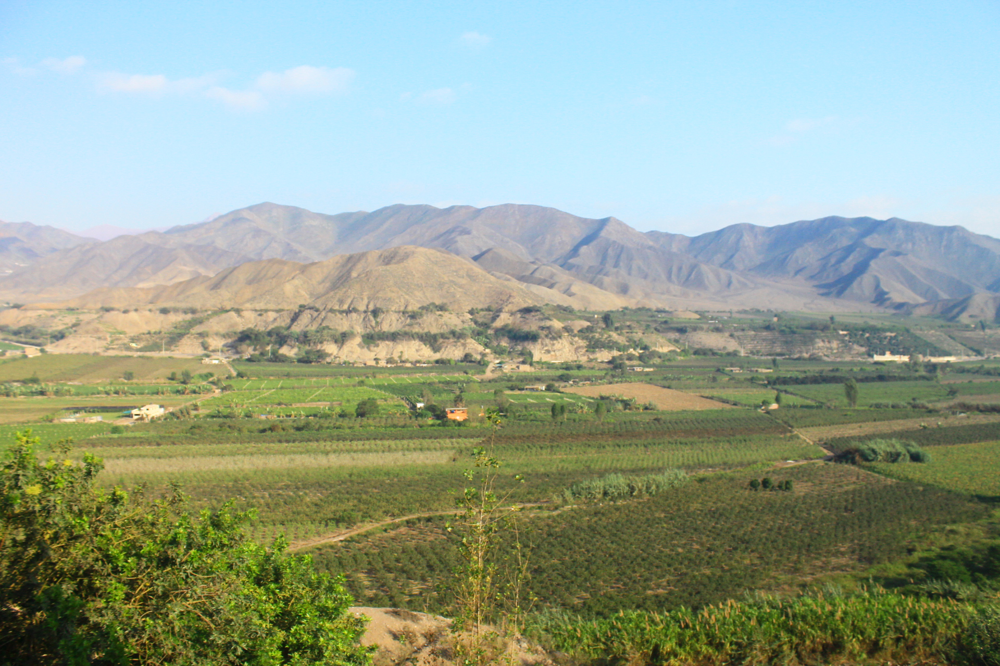

Lugares Turísticos



Por San Andrés: Este es un camino rural pero es el más rápido. Debes tomar el desvío que está a la altura del kilómetro 75 de la Panamericana Sur, cruzar el puente que va hacia las instalaciones de Cementos Lima, rumbo al Este, por una trocha que nos llevará directamente a la parte alta de Azpitia. La vista desde esta parte del camino es espectacular, tenga su cámara a mano.
Por León Dormido: A la altura del kilómetro 80 de la Panamericana Sur, debes tomar el desvío hacia San Antonio (el camino pasa por debajo de un túnel). Al llegar a San Antonio, tomas el camino que va hacia Santa Cruz de Flores. Vas por toda la Av Panamericana Sur y a la altura del Kilometro 79 esta la playa León Dormido. Entras por la auxiliar y pasar por el puente (rumbo a la izquierda) Esta ruta te llevará hasta Santa Cruz de Flores o comúnmente llamado LAS FLORES. Una vez que llegas a la plaza de armas de Las Flores sigue de frente un par de cuadras más luego a la derecha por 1 cuadra más y luego izquierda. Y de ahí en adelante es solo seguir la carretera. 15 minutos más a paso lento y estarás en Azpitia. El camino desde las Flores hasta Azpitia es trocha y con muchas curvas así que ve despacio siempre al lado del río Mala.
Ubicación y distancia